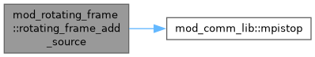
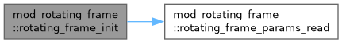

mod_rotating_frame Module Reference
Module for including rotating frame in (magneto)hydrodynamics simulations The rotation vector is assumed to be along z direction (both in cylindrical and spherical). More...
Functions/Subroutines | |
| subroutine | rotating_frame_params_read (files) |
| Read this module's parameters from a file. | |
| subroutine | rotating_frame_init () |
| Initialize the module. | |
| subroutine | rotating_frame_add_source (qdt, dtfactor, ixil, ixol, wct, w, x) |
| w[iw]=w[iw]+qdt*S[wCT,qtC,x] where S is the source based on wCT within ixO | |
Variables | |
| double precision | omega_frame |
| Rotation frequency of the frame. | |
Detailed Description
Module for including rotating frame in (magneto)hydrodynamics simulations The rotation vector is assumed to be along z direction (both in cylindrical and spherical).
Function/Subroutine Documentation
◆ rotating_frame_add_source()
| subroutine mod_rotating_frame::rotating_frame_add_source | ( | double precision, intent(in) | qdt, |
| double precision, intent(in) | dtfactor, | ||
| integer, intent(in) | ixi, | ||
| integer, intent(in) | l, | ||
| integer, intent(in) | ixo, | ||
| l, | |||
| double precision, dimension(ixi^s,1:nw), intent(in) | wct, | ||
| double precision, dimension(ixi^s,1:nw), intent(inout) | w, | ||
| double precision, dimension(ixi^s,1:ndim), intent(in) | x ) |
w[iw]=w[iw]+qdt*S[wCT,qtC,x] where S is the source based on wCT within ixO
Definition at line 41 of file mod_rotating_frame.t.
Here is the call graph for this function:

◆ rotating_frame_init()
| subroutine mod_rotating_frame::rotating_frame_init |
Initialize the module.
Definition at line 32 of file mod_rotating_frame.t.
Here is the call graph for this function:

◆ rotating_frame_params_read()
| subroutine mod_rotating_frame::rotating_frame_params_read | ( | character(len=*), dimension(:), intent(in) | files | ) |
Read this module's parameters from a file.
Definition at line 16 of file mod_rotating_frame.t.
Variable Documentation
◆ omega_frame
| double precision mod_rotating_frame::omega_frame |
Rotation frequency of the frame.
Definition at line 9 of file mod_rotating_frame.t.
Generated by